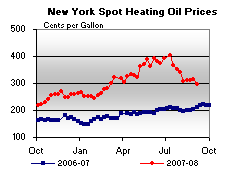

Released on September 10, 2008
(Next Release on September 17, 2008)
Feeling the Pinch: Gasoline Prices Vary (a lot) from Country to Country
Whether Americans decided against vacations this summer—or at least made them more efficient or closer to home (“staycations”)—or are carpooling or using more public transportation, the message is clear: sustained high retail prices for motor gasoline are having an impact on the American driver. U.S. gasoline demand, according to the Energy Information Administration (EIA), declined by 2.3 percent in May and 4.4 percent in June, compared with the same time periods a year ago. This reflected the largest decline in year-ago gasoline demand in May since 1980 and the fifth-largest year-ago decline in any May since at least 1945. For June the comparisons are even more dramatic, with the year-ago decline this June the largest since 1980 and the third-largest since 1945.
Americans have also been consuming less oil overall. Total oil consumption data from the first half of 2008 compared with the first half of 2007 show that Americans consumed, on average, 925,000 barrels per day (or 4.5 percent) less. Over the same period, the United Kingdom, France, and Italy also posted continued declines in oil consumption, while consumption in the rest of the Organization for Economic Cooperation and Development (OECD) countries was relatively flat. According to EIA’s latest Short-Term Energy Outlook OECD countries consumed about 1 million barrels per day less in the first half of 2008 than in the first half of 2007.
Over the same period, non-OECD countries accounted for about 1.3 million barrels per day of increased consumption, with significant growth taking place in China, the Middle East, and Latin America. The reasons for this increase include the faster-growing economies of the developing world and their energy-intensive industrial sectors. A key reason for the sharp contrast in oil consumption trends in the OECD and non-OECD countries is differences in retail prices, as shown in the figure below.
Many governments intentionally keep retail fuel prices low through subsidies or price caps. However, with the price of crude oil increasing two-fold over the year between June 2007 and June 2008, the cost of maintaining such arrangements may have begun to outweigh the benefits, especially for net oil importers. In Bangladesh, Brazil, Brunei, India, Indonesia, Jordan, Malaysia, Burma (Myanmar), Pakistan, South Africa, Sri Lanka, and Thailand, governments were forced to relax price controls despite serious inflation concerns due to strong economic growth. In June 2008, China announced plans to increase the price of motor gasoline and diesel by roughly 17 percent (42 cents per gallon) each, bringing Chinese prices closer to global prices.
The net oil exporters can avoid implementing price reforms longer than the net importers, but the increasing disparity in world retail prices creates a strong incentive to supply the export market over the domestic market. Iran, for example, is a country where the low retail price for gasoline and diesel has increased demand to the extent it is now a net importer of both products, despite being the world’s fourth largest oil producer. This has not only led to a high subsidy cost, but also to shortages and the implementation of a gasoline-rationing program. Similarly, Nigeria also relies on product imports to meet its growing demand for transportation fuels. In addition, price policy differentials between neighboring countries have further increased demand by encouraging cross-border smuggling, especially in Nigeria and Venezuela.
The product price subsidies result in lower domestic retail prices than the market would indicate. This makes oil consumption, particularly for transportation fuels, much less sensitive to price changes than it would be otherwise, keeping consumption in those countries artificially high. As a result, countries without subsidies find their prices driven up and their demand driven lower than would otherwise have been the case in order to balance world oil supply and demand.
U.S. Gasoline and Diesel Price Drops Persist
The U.S. average retail price for regular gasoline fell for the ninth consecutive week, dropping another 3.2 cents to 364.8 cents per gallon. Unlike last week when prices increased slightly in the Gulf Coast and the Lower Atlantic portion of the East Coast, this week prices declined in all regions of the country. The price on the East Coast fell 2.2 cents to 360.9 cents per gallon. The average price in the Midwest slid 3.7 cents to 363.6 cents per gallon. Reversing a portion of last week’s increase, the price in the Gulf Coast dipped by 2.7 cents to 355.1 cents per gallon, and remained the lowest average price of any region. The price in the Rocky Mountains fell for the seventh consecutive week, dropping 4.6 cents to 376.7 cents per gallon. On the West Coast, the average price has now fallen for eleven straight weeks, sliding another 4.6 cents to hit 381.3 cents per gallon. That price has plunged 64.7 cents since its record high set on June 23. Although the West Coast price remains the highest average regional price in the Nation, the differential between the national average and the average price on the West Coast has narrowed by more than 21 cents since that June 23 all-time regional high. The price in California dropped 4.6 cents to 385.9 cents per gallon.
For the eighth week in a row, diesel prices dropped in all regions of the U.S. The average U.S. retail diesel price slumped 6.2 cents to 405.9 cents per gallon, a cumulative plummet of more than 70 cents from the all-time high set on July 14. Nonetheless, the price remained 113.5 cents higher than a year ago. The average price on the East Coast dropped 6.9 cents to 410 cents per gallon. The price in the Midwest slipped 5.1 cents, hitting 401.5 cents per gallon. The price in the Gulf Coast dropped 5.3 cents to tie with the Midwest for the lowest price in the Nation at 401.5 cents per gallon. The price in the Rocky Mountains tumbled 7.9 cents, to 410.5 cents per gallon. Plunging 9.2 cents, the average price on the West Coast reached 415.6 cents per gallon. In California, the price fell to 418.5 cents per gallon, a drop of 9.7 cents.
Propane Inventories Push Higher Despite Hurricane Disruption
Primary supplies of propane managed to push higher by over 1.5 million barrels despite the disruption by Hurricane Gustav last week. With last week’s build, total propane inventories stood at an estimated 54.5 million barrels as of September 5, 2008, a level that continued to track below the average range for this time of year. Despite a small drop in the East Coast measuring 0.1 million barrels, inventory gains were reported in all other major regions last week. The largest gain was in the Midwest with a 1.2 million-barrel increase, followed by a 0.3 million-barrel increase in Gulf Coast inventories. During this same time, the combined Rocky Mountain/West Coast region showed a modest 0.1 million-barrel gain. Propylene non-fuel use inventories remained relatively flat last week but accounted for a smaller 5.9 percent share of total propane/propylene inventories from the prior week’s 6.1 percent share.
Text from the previous editions of “This Week In Petroleum” is now accessible through a link at the top right-hand corner of this page.
| Retail Prices (Cents Per Gallon) | |||||||
| Retail Data | Changes From | Retail Data | Changes From | ||||
| 09/08/08 | Week | Year | 09/08/08 | Week | Year | ||
| Gasoline | 364.8 | Diesel Fuel | 405.9 | ||||
| Spot Prices (Cents Per Gallon*) | |||||||||||||||||||||||||||||||||||
|  | |||||||||||||||||||||||||||||||||||
|
|||||||||||||||||||||||||||||||||||
| *Note: Crude Oil WTI Price in Dollars per Barrel. | |||||||||||||||||||||||||||||||||||
| Stocks (Million Barrels) | |||||||
| Stocks Data | Changes From | Stocks Data | Changes From | ||||
| 09/05/08 | Week | Year | 09/05/08 | Week | Year | ||
| Crude Oil | 298.0 | Distillate | 130.5 | ||||
| Gasoline | 187.9 | Propane | 54.451 | ||||